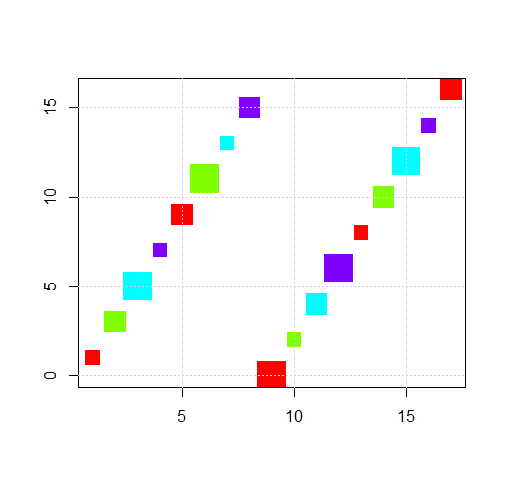
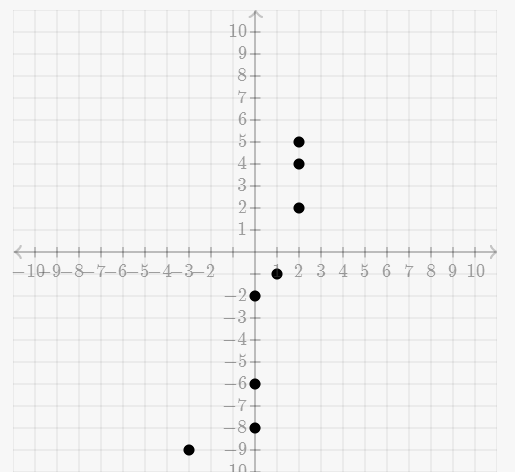
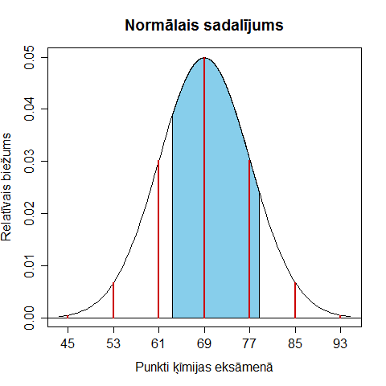
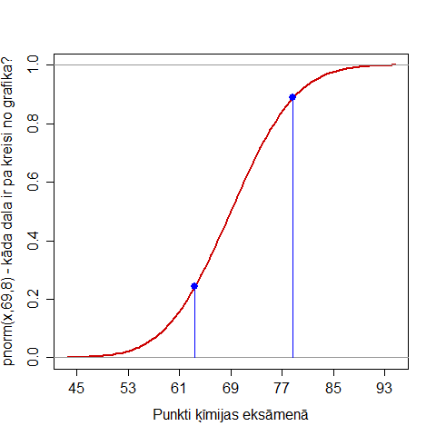

Scenārijs: Amerikāņu matemātiķis un demogrāfs Alfrēds Lotka un itāliešu matemātiķis Vito Volterra neatkarīgi viens no otra nonāca pie modeļa, kurš apraksta mākslīgu ekosistēmu, kurā dzīvo zālēdāji un plēsēji, kuru populācijas viena otru uztur līdzsvarā. Par šo modeli var izlasīt, piemēram, Vikipēdijā: Lotka–Volterra equation. Šajā uzdevumā jāpielāgo R valodā uzrakstīts scenārijs, kurš soli pa solim rēķina zālēdāju un plēsēju populāciju skaita izmaiņas.
Kādā zemē dzīvo divu veidu zvēri - paviāni un gepardi. Paviāni pārtiek no augu barības, savukārt gepardi pārtiek no paviāniem. Paviānu skaita pieauguma ātrums ir proporcionāls jau esošo paviānu skaitam (ar koeficientu α), no šī ātruma atņem apēsto paviānu skaitu, kas proporcionāls paviānu-gepardu satikšanās reižu skaitam (paviānu un gepardu skaita reizinājumam) ar koeficientu β. Savukārt gepardu skaita pieauguma ātrums, ja nav paviānu, ir negatīvs un proporcionāls jau esošo gepardu skaitam ar koeficientu γ, ko palielina par lielumu, kas proporcionāls paviānu-gepardu satikšanās reižu skaitam (paviānu un gepardu skaita reizinājumam) ar koeficientu δ
Zvēru skaitu katras dienas sākumā izsaka ar dubultās precizitātes daļskaitļiem (šī ir modeļa atšķirība no realitātes - t.i. ir pilnīgi iespējami ļoti nelieli pozitīvi skaitļi, kas izsaka dzīvnieku skaitu. Piemēram, mili-, mikro-, nano- un piko-gepardi. Šos daļskaitļus glabā attiecīgi vektoros x (paviāni) un y (gepardi). Gepardu un paviānu skaits dienas beigās mainās par lielumiem dx un dy, ko apraksta šādas formulas:
1.solis: Izveidot datorsimulāciju, kura darbina ciklu N reizes, uzkrāj vektoros x un y vērtības katras dienas sākumā, bet pēc tam attēlo paviānu un gepardu skaitu grafiski. Šim un turpmākajiem uzdevumiem koda paraugu var apskatīties šeit: http://java-eim.googlecode.com/svn/trunk/ddgatve-exam/script.R Nepieciešamie parametri doti tabulā:
| Mainīgais | Vērtība |
|---|---|
| x(1) | 0.6 |
| y(1) | 0.2 |
| α | 2E-3 |
| β | 1.5E-2 |
| γ | 7E-3 |
| δ | 1.9E-2 |
| N | 4000 |
2.solis: Zīmēt apvienotu grafiku - paviānu un gepardu skaitu atkarībā no dienu skaita. Paviānu skaitu apraksta zaļš grafiks; gepardu skaitu - melns grafiks. R valodas izteiksmes, ar kurām to var izdarīt, ir šādas:
plot(x, type="l", col="green", ylim=c(0,max(x))) lines(y, type="l", col="black")
3.solis: Ierakstot "plot" funkcijā papildus parametrus "xlab" un "ylab" - piešķirt asīm saturīgus nosaukumus: uz horizontālās ass rakstīt "Dienas", un uz vertikālās - "Zvēri".
4.solis: Ja Jūs pamanāt, ka grafikos neparādās latviešu modificētie burti (piemēram, "ā" un "ē"), tad tos var aizstāt ar Unikoda numuriem. Teiksim, "\u0101" apzīmē mazo "ā"; un "\u0113" apzīmē "ē". T.i. vārda "Zvēri" vietā var rakstīt "Zv\u0113ri", ja tas ko palīdz.
5.solis: Izmantojot funkciju "min(y)", izskaitļot minimālo gepardu skaitu - un pierakstīt to.
6.solis: Eksportēt iegūto grafiku (piemēram, kā PNG failu) - novietot to direktorijā /home/skolnieksNN/Dokumenti/YourName/exam/name-exam; nosaukt chart1.png. Līdzīgi izveidot failu script1.R, kurš satur TIKAI kodu, kas rēķina Lotkas-Volterras vienādojumu.
7.solis: Ar komandām "Add" un "Commit" ievietot to savā versiju kontroles sistēmā.
Scenārijs: Mēness lēktu un rietu laiki mainās atkarībā no Mēness fāzēm - atšķirībā no saules grafikiem, šo grafiku galvenais cikls ir nevis 1 gads, bet viens sinodiskais mēnesis (apmēram 29.53 dienas). Ņemot vērā Zemes kustību ap Sauli, var gadīties, ka vasaras mēnešos Mēness virs horizonta pavada ilgāku laiku nekā ziemas mēnešos. Pirmajā tuvinājumā var pieņemt, ka Mēness pie debess apraksta līdzīgu redzamo ceļu kā Saule (t.s. ekliptisko plakni); vienīgi Mēness pa to pārvietojas citā ritmā.
Atšķirībā no Saules, kura mērenajā joslā katrā 24h diennaktī vispirms lēc un pēc tam noriet, Mēness var rīkoties dažādi - dažās mēness fāzēs tas vispirms noriet un vēlāk tanī pašā dienā uzlēc. Var arī notikt tā, ka dažās dienās tas tikai lēc, bet nenoriet; vai arī tikai noriet, bet neuzlēc.
Šajā praktiskajā darbā vajadzēs zīmēt Mēness lēkta un rieta grafikus; kā arī - cik ilgi tas katru dienu pavada virs horizonta. Lai atvieglotu uzdevumu, šoreiz neaplūkosim vietas polārajos apgabalos.
1.solis: Iet uz servisu http://aa.usno.navy.mil/data/docs/RS_OneYear.php; ievada datus par savu pilsētu (sk. tabulu):
| Mainīgais | Vērtība |
|---|---|
| Pilsētas nosaukums | Losandželosa |
| Ģeogrāfiskais garums | 118°15′W |
| Ģeogrāfiskais platums | 34°03′N |
| Laika josla | UTC-8 |
2.solis: Iekopējiet izvadīto datumu un Mēness lēktu/rietu tabulu LibreOffice Calc vai līdzīgā izklājlapā. Sadalīt pa fiksēta platuma kolonnām un iekopēt Google Docs izklājlapā. Izklājlapa ar "Share" jāpadara redzama ikvienam, kuram ir links; šī izklājlapa arī jāpublicē Webā kā CSV.
3.solis: Izmantojiet https://summerschool.googlecode.com/hg/dataproc/chapters/Astro/code/ vai citus Jums zināmus koda paraugus (var arī to, ar kuru Jūs zīmējāt saullēktu/saulrietu diagrammas kursa 1.nedēļā). Mēness-lēkta grafiku zīmēt sarkanu; Mēnes-rieta grafiku - zilu.
4.solis: Aprēķināt Mēness pavadīto laiku virs horizonta. Ja Mēness-riets kādu dienu gadās vēlāk nekā Mēness-lēkts, tad no Mēness-rieta var atņemt Mēness-lēktu un iegūt "stundas virs horizonta". Ja viņu secība ir pretēja, tad arī var atņet no lielākā skaitļa mazāko, bet bet laiks virs horizonta "24h - atraistais lielums". Laiku virs horizonta apzīmēt ar zaļu grafiku.
5.solis: Pilsētas nosaukumu, tās ģeogrāfisko garumu un platumu attēlot grafika virsrakstā. Laika joslu attēlot pie vertkālās ass.
6.solis: Eksportēt iegūto diagrammu kā PNG - chart2.png; un R scenāriju (kurš nedara neko citu - tikai zīmē augšminēto diagrammu) - kā script2.R.
7.solis: Līdzīgi kā iepriekšējā uzdevumā, abus 6. solī izveidotos failus ar "Add" un "Commit" ieraksta repozitorijā.
Scenārijs: Uz viesībām atnākuši 100 ciemiņi - un sakāra priekšnamā savas cepures. Viesības iztraucēja policija - un visi ciemiņi steigā izklīda. Katrs paķēra pirmo cepuri, kas gadījās pa rokai. Varbūtību teorijā ir zināms, ka aptuveni ar varbūtību p = 0.37%, NEVIENS nepaņems savu cepuri.
R programma, kas to rēķina ir šāda:
# cik reižu simulē eksperimentu
numExperiments <- 10000
# cik reižu neviens nedabūja savu cepuri
total <- 0
# atkārto 10 tūkstošus reižu:
for (i in 1:numExperiments) {
# x - visi skaitļi no 1 līdz 100 pareizā secībā
x <- 1:100
# y - visi skaitļi no 1 līdz 100 nejauši sajauktā secībā
y <- sample(1:100)
# all(??) - pārbauda, vai tas, kas rakstīts iekavās VIENMĒR ir pareizi.
# Ja x[n] != y[n] (t.i. x[n] un y[n] nav vienādi, kur n = 1,2,3,...,100)
# tad palielina total - pieskaita vieninieku
if (all(x != y)) { total <- total + 1}
}
# pašās beigās izdala "veiksmīgo" eksperimentu skaitu ar visu eksperimentu skaitu
total/numExperiments
Jūsu uzdevums ir augšminētā uzdevuma izmaiņa: Šoreiz mēs par "veiksmīgu" mēs uzskatām tādu cepuru sajaukšanos, kur ne tikai neviens nedabū pats savu cepuri, bet arī - nedabū sava kaimiņa cepuri. T.i. x[n] un y[n] vienmēr atšķiras vairāk kā par 1.
1. solis Izmainīt datorprogrammiņu (rindiņu, kas rakstīts iekš all(...)) tā, lai pārbaudītu to, vai x un y atšķiras vismaz par 2.
2.solis: 10000 reižu atkārtot šo eksperimentu; noskaidro cik pavisam bija veiksmīgu eksperimentu un šo skaitli izdala ar 1000; ieraksta eksāmena formā. Noglabā arī scenāriju script3.R - iesūta ar "Add" un "Commit" versiju kontroles rīkā.
Scenārijs: Ja aritmētiskai progresijai rēķina atlikumus, dalot ar kādu skaitli, tad šie atlikumi veido raksturīgu rakstu jeb musturi (pattern). Šajā uzdevumā Jums dots zīmējums, kurš attēlo aritmētisku progresiju ar nezināmu pirmo locekli un nezināmu diferenci - un tieši 17 locekļiem: xx <- seq(??, by=??, length.out = 17).
Pēc tam šīs virknes locekļiem meklēti atlikumi dalot ar trešo nezināmo skaitli; šie locekļi nokrāsoti 3, 4 vai 6 dažādās krāsās no varavīksnes krāsu spektra, attēloti ar pilniem vai par tukšiem kvadrātiņiem, un sazīmēti 2 vai 3 dažādos izmēros.
Ieteicamā risināšanas secība:
x <- seq(2,by=3,length.out=17) plot(x)
xx <- seq(___, by=___, length.out = 17) plot(xx %% ___, col=rainbow(___), pch=___, cex=c(_,_,_), xlab="", ylab="") grid()
Attēls:

1.solis: Izlabo R scenāriju, ierakstot tanī skaitļus - un salīdzinot rezultātu ar doto bildīti. R scenāriju noglabā savā eksāmena direktorijā, un pievieno koda repozitorijam ar "Add" un "Commit".
Scenārijs: Dotajā zīmējumā attēloti punkti, kuri parāda vairāku novērojumu rezultātus: kā y-parametrs atkarīgs no x-parametra. Ja mēs izdarām pieņēmumu (ne vienmēr šāds pieņēmums ir attaisnots) par to, ka y-parametram ir pārsvarā lineāra atkarība no x-parametra (plus vēl kaut kāds troksnis, kas mūs neinteresē) - tad tas nozīmē, ka caur dotajiem punktiem, kuri stingri matemātiski sakot, neatrodas uz vienas taisnes, ir jānovelk taisne tā, lai attālumu kvadrātu summa (visus attālumus mērot no taisnes līdz katram no punktiem pa vertikāli) būtu vismazākā iespējamā. Izrādās, ka šādu taisni var novilkt - un formulas ir dotas mūsu eksāmena sagataves failā šeit.
Attēls:

1.solis Pielabot doto lineārās regresijas scenāriju - lai tas attēlotu Jūsu zīmējumā dotos punktus. Pēc tam šo scenāriju noglabājiet atsevišķā failā script5.R un pievienojiet savam repozitorijam ar "Add" un "Commit".
Ķīmijas centralizētajā eksāmenā, kura rezultāti atbilst normālajam sadalījumam, rezultātu vidējā vērtība bija μ = 69, bet dispersija bija σ = 8. Kādai daļai eksaminējamo rezultāts bija starp 63.4 un 78.7?
Attēls:

Lai atrastu iekrāsoto laukumiņu zem zvanveida līknes (normālā sadalījuma blīvuma funkcijas), var izmantot pnorm(x, mean=69, sd=8). Šī funkcija parāda, kāda ir varbūtība, ka normāli sadalīts gadījuma lielums pieņems vērtību, kas ir mazāka nekā "x". Savukārt, lai atrastu laukumiņu starp 63.4 un 78.7, ir jāatskaita divas "pnorm" vērtības - t.i. zemāk dotajā zīmējumā ir divi zilie punkti, un laukumiņu izsaka šo punktu y-koordinātu starpība.

1.solis Saglabāt scenāriju, kurš aprēķina iekrāsoto laukumiņu zem zvanveida līknes atsevišķā failā - script6.R un pievienojiet savam repozitorijam ar "Add" un "Commit".
Kādā valstī gatavo N = 800 dažādus telefonu modeļus - visi tie ir vienlīdz izplatīti. Noskaidrot, cik cilvēku šajā valstī jāsastop, lai varbūtība viņu vidū atrast divus ar vienādiem telefonu modeļiem būtu lielāka par 0.5. (Var pieņemt, ka ikvienam ir telefons.)
Atgādinām, ka varbūtība, ka nejauši izvēloties k cilvēkus (k = 1,...,800), varbūtība, ka viņiem visiem būs DAŽĀDI telefonu modeļi ir aprakstāma ar formulu:
Šīs daļas skaitītājā uzrakstīts, cik dažādos veidos var izvēlēties k telefonus no N tā, lai tie visi būtu dažādi; daļas saucējā uzrakstīts kopējais veidu skaits, kādos var izvēlēties telefonus. "Veiksmīgo" iznākumu skaitu dalot ar visu iznākumu skaitu, iegūstam varbūtību.
Ieteicamā risināšanas secība:
Piezīme: Ņemot vērā, ka pie atrastā indeksa k varbūtība tam, ka visi k sastaptie cilvēki būs ar dažādiem telefonu modeļiem, ir mazāka par 0.5; pretējā notikuma varbūtība (t.i. atrodas vismaz divi cilvēki, kuriem telefonu modeļi sakrīt) jau būs lielāka par 0.5.
1.solis Saglabāt R scenāriju script7.R un pievienot to savam repozitorijam ar "Add" un "Commit".